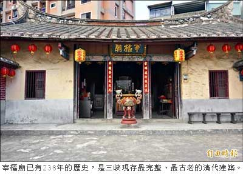

〈台北都會〉
三峽宰樞廟 指定為古蹟
李雅雯、張安蕎｜自由時報／新北都會新聞∣2014年9月24日
位於三峽區秀川街上的宰樞廟，經過新北市政府古蹟歷史建築聚落及文化景觀審議委員會審議後，確定指定為古蹟，善德橋則登錄為歷史建築，新北市政府文化局近期將公告。
見證三峽區開發史
專家學者們實地勘查宰樞廟後指出，宰樞廟的歷史，幾乎見證了三峽區的開發史，玄天上帝與李氏祖先的合祀相當罕見，與李氏族人的居住生活融為一體，頗具地方守護神、庄廟的意義，再加上宰樞廟面朝三峽溪，過往為碼頭，建物主體牆壁多為土墼，保留清代的傳統做法，畫家李梅樹更曾參與整修，基於以上理由，故決議將「宰樞廟」指定為古蹟。
「終於對得起祖先了！」宰樞廟主委、同時也是秀川里長李楷瑞獲知後驚喜表示，宰樞廟見證清朝漢人移民台灣的開墾史，也見證三峽的社區文化，已有兩百三十八年的歷史，是三峽現存最完整、最古老的清代建築，廟宇從未經過大型加工或修繕，結構上仍維持清朝原汁原味的建築特色。
年久失修 盼進行修繕
李楷瑞說，清朝時期李家是大地主，有足夠的田地稅收維持宰樞廟的運作，光復後，政府推動「耕者有其田」政策，登記在玄天上帝及廟方名下的田產，均發放給佃農使用，至此廟方便缺乏經費維持香火及修繕工作。由於宰樞廟的屋頂是木造結構，目前已出現白蟻蛀蝕的狀況，樑柱也因年久失修而斷裂，傳統土埆牆更剝落出現大洞，李楷瑞說，希望文化局能派員進行修繕工作，讓宰樞廟能夠保存下去。
善德橋位於三峽介壽路一段兩百七十六巷，橫跨阿泗坑溪，日治時期大正年間，發生許多女性童工涉溪到山上採茶，卻不幸遭湍急溪水沖走的事件，當地茶農為此合力出錢，蓋了這座善德橋，橋旁還有一塊紀念碑，記載了捐錢人的名字及橋的歷史。
文化局主任秘書李玟說，私有古蹟的修繕可撰寫計畫申請，由於計畫的草擬需專業團隊協助，計畫撰寫可百分百補助，計畫送審議委員會審查通過後，修繕經費由政府和古蹟持有人以九比一的比例分攤。